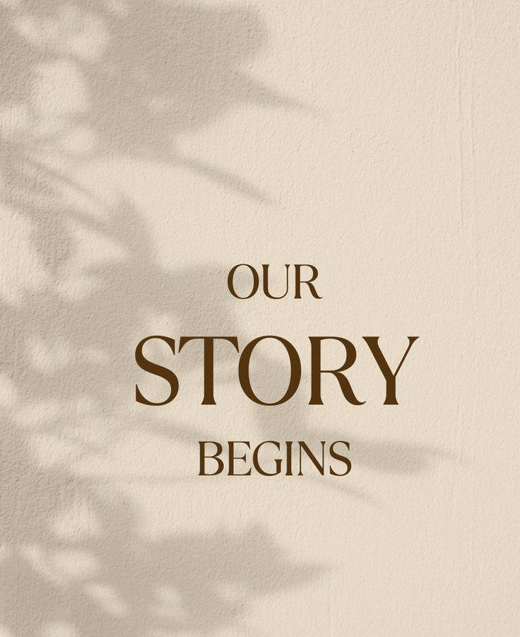

The Life That Crafted Craftique
We believe that the things we surround ourselves with should tell a story—and our story is about chasing
the joy of creation.
The Turning Point: From [Former Career Field, e.g., Corporate Sales] to Creativity
Craftique wasn't planned in a business meeting; it emerged from a deep, personal need to slow down and
create. For years, our founder, Shana Yasmin, was immersed in the demanding world of tech field.
It was a path of commitment, but it often left
little time for the true passion that brought peace papercrafting, knitting,
working with wood and papers.
In the spring of 2023, the quiet of a challenging year, a decision was made. The
rush and stress were replaced by the texture of soft yarn, fine paper, rich
wood grain, and the quiet concentration of making something beautiful with one's own hands.
"I realized that to truly live, I needed to spend more time with my family and do something that brought
genuine joy every single day. Craftique is the result of that choice."
Building a Community, One Creation at a Time
The vision for Craftique quickly grew beyond just a personal escape. It became about fostering a
community where others could share that same joy and confidence in creation